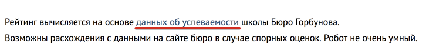
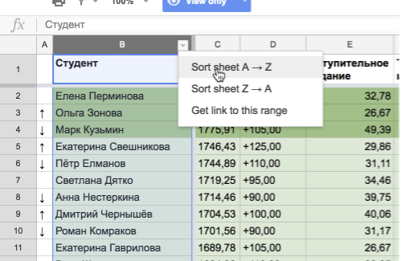
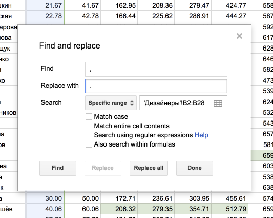
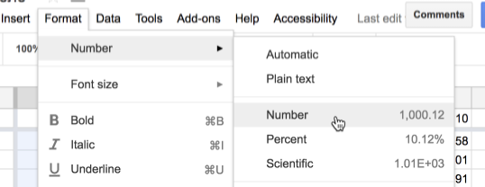

Открыть гугл-таблицу с данными,
Отсортировать результаты по алфавиту,
Скопировать колонку «Итого»,
Открыть гугл-таблицу рейтинга, перейти на вкладку потока,
Вставить данные в новую колонку,
Выделить колонку и заменить все запятые на точки,
Выставить формат ячеек как «Number»,
Проверить результат.